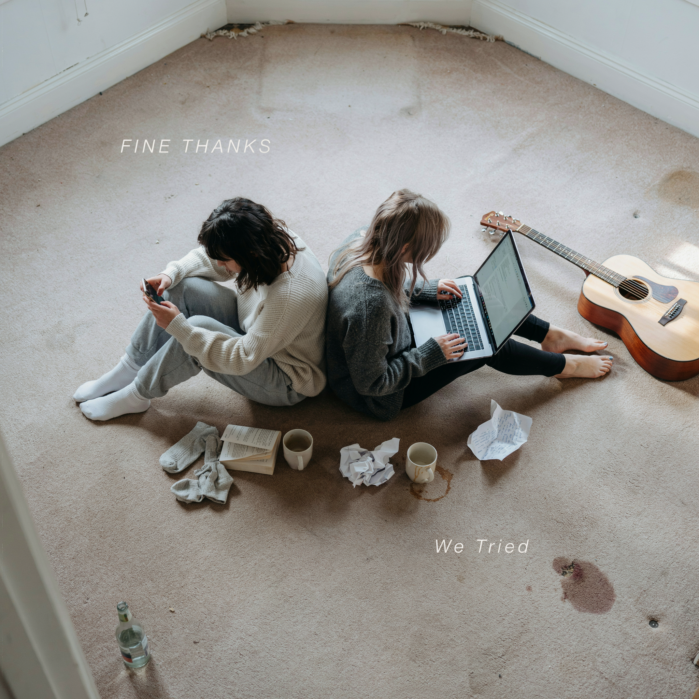
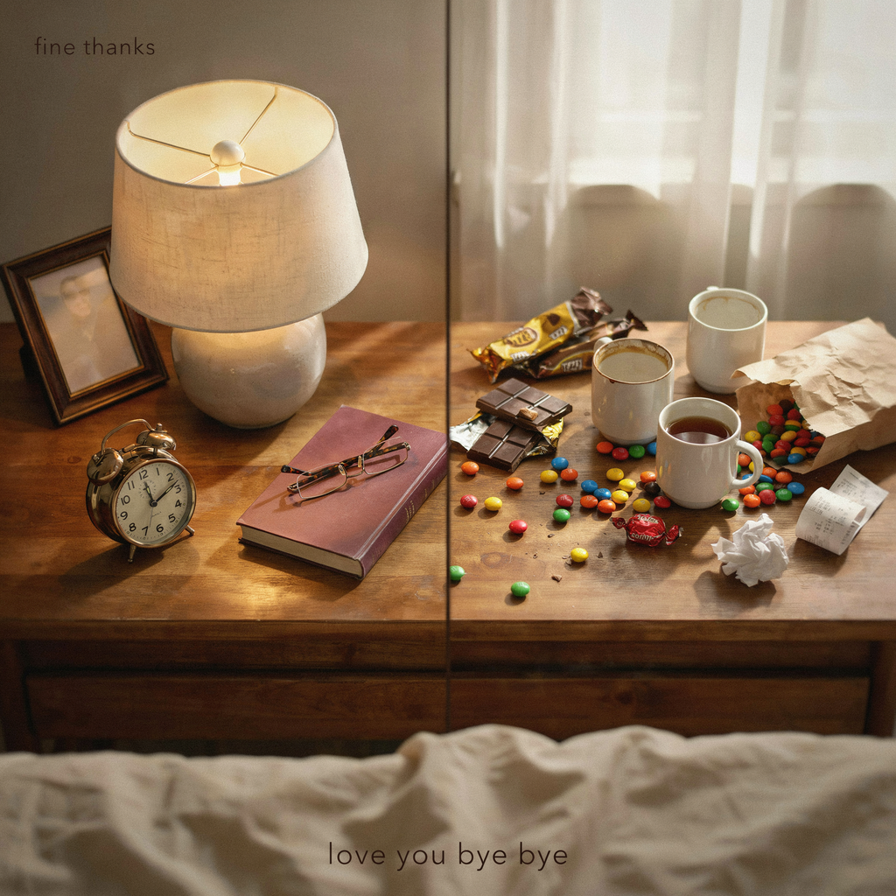

Deadpan British Indie Rock


Fine Thanks is Jess (anxious Southern voice) and Sam (cynical Northern voice), two British women whose deadpan duet vocals turn modern millennial disasters into indie rock therapy sessions. What started as monotone solo observations has evolved into a full-blown argument over lo-fi garage rock, with Jess and Sam's contrasting perspectives bouncing off each other like a passive-aggressive ping-pong match.
Their sound is intentionally minimal but getting louder. Simple two-chord progressions, sparse arrangements, vocals mixed dry and upfront like you're sitting across from two people venting about their terrible day. No reverb, no polish, just conversational British sarcasm set to bass-driven indie rock. Recent albums lean harder into post-punk aggression, with the two voices trading lines, finishing each other's complaints, and occasionally yelling in unison.
Six albums deep (2026), Fine Thanks has perfected the art of turning email anxiety, rent rises, wedding-season bankruptcy, LinkedIn envy, internet brain rot, and toxic wellness culture into cathartic indie rock anthems. It's funny because it's true, and it's therapeutic because Jess and Sam sound exactly as annoyed as you feel. Equal parts Wet Leg, Dry Cleaning, and Girl Band, with the argumentative energy of a group chat gone wrong.
Indie Rock • 11 Tracks
After five albums of anxiety, frustration, and British politeness stretched to breaking point, Fine Thanks finally finds hope. "Good Enough" is their first explicitly optimistic album—eleven tracks about finding peace through lowering impossible standards. The title track asks a radical question: what if good enough is actually good enough?
The album opens with "Good Enough" (mission statement in major key) and moves through perfectionism's prison. "Perfectionism Is a Fucking Liar" is an angry banger calling out the promises of control that deliver only anxiety. "Gold Star Syndrome" explores addiction to external validation with sarcastic wit. "Lowering the Bar" celebrates trying less as radical self-care, playful and genuinely optimistic.
Standout moments include "Rest Is Radical" (warm ballad giving permission to stop), "Done" (short punchy anthem celebrating completion over perfection), "Mediocre and Thriving" (massive gang-vocal celebration of being average), "Progress Not Perfection" (building from somber to hopeful), and "Small Wins" (upbeat celebration of showering and replying to texts). The closer "Good Enough (Reprise)" brings the album full circle with earned triumph.
The production stays warm and organic but shifts to major keys. Jess and Sam's voices trade verses, harmonize on massive choruses, and show genuine optimism earned through acceptance. It's still witty and self-aware, but hopeful. They're not fixed, not perfect—just good enough. And that's enough.
Indie Rock • 11 Tracks
Fine Thanks explores the exhausting performance of British over-apology. "We Tried" is eleven tracks about saying sorry for existing—for breathing, for living, for taking up space. The title track is a resigned shrug set to indie rock jangle: we tried to be less apologetic, we failed, but at least we tried.
The album opens with the title track and spirals through pathological politeness: "Said Sorry Twenty Times Today" (compulsive apology counting), "Queue Jumper (Acoustic)" (stripped-down version admitting they'd never actually confront anyone), "Eye Contact (With Strangers)" (social anxiety as indie ballad), and "Email Draft (Unsent)" (communication paralysis). Each track captures a specific flavor of British self-effacement.
Standout moments include "Sorry for Breathing" (apology for existing), "Didn't Mean to Exist" (existential politeness), "My Bad (For Living)" (sarcastic self-flagellation), and "Sorry, What?" (mishearing as personality trait). "Is This Okay?" turns every decision into a question. The closer "We Tried (Reprise)" repeats the resigned admission: they tried to be more assertive, but British conditioning won.
The production is gentle, acoustic-leaning, with Jess and Sam's voices trading apologies and occasionally harmonizing in mutual exhaustion. It's funny and sad in equal measure—a portrait of two people who've apologized their way through life and can't stop now. At least they tried.
Indie Rock / Post-Punk • 11 Tracks
After five albums of deadpan observations about modern millennial frustration, Fine Thanks finally snapped. "Fuck Politeness" is their loudest, angriest album yet—eleven tracks of pure British rage about people who refuse to follow basic social contracts. Queue jumpers, speakerphone abusers, escalator blockers, and drivers who won't indicate. Jess and Sam's duet vocals are no longer deadpan; they're yelling.
The album opens with "Queue Jumper" (aggressive post-punk sprint) and doesn't let up. "Move" is a two-chord rant about people who stand in doorways. "Speakerphone in Public" builds to a screaming climax. "Say Thank You" turns basic manners into a punk anthem. Each track is a specific, visceral frustration delivered with zero politeness left.
Standout moments include "Stand on the Right" (escalator etiquette as hardcore punk), "Your Bag Doesn't Need a Seat" (public transport rage), "Indicate, You Prick" (driving fury), and "3AM Bassline" (neighbour noise complaint as slow-burning post-punk). The album closer "Still Too Polite" admits they'll never fully escape British conditioning, ending with bitter self-awareness.
This is Fine Thanks at their most cathartic. The production stays lo-fi and raw, but the energy is furious. Jess and Sam trade lines like a boxing match, finish each other's insults, and occasionally scream in unison. It's not funny anymore—it's therapy through volume.
Indie Rock • 11 Tracks
Fine Thanks returns to the small disasters that make modern life unbearable. "Minor Inconveniences (Again)" is a spiritual sequel to their debut "Moderately Inconvenienced," revisiting familiar themes—self-checkout failures, subscription traps, flatmate drama, and delivery mishaps—with the added dimension of Jess and Sam's duet vocals arguing over who has it worse.
The album opens with "Self-Checkout (Again)" (because the nightmare never ends) and cycles through digital-age frustrations: "Subscription I Forgot About" (financial hemorrhaging), "Reply All" (email disaster), "Text Tone Anxiety" (notification dread), and "Attempted Delivery" (you were definitely home). Jess and Sam's voices trade complaints, overlap in bitter harmony, and occasionally unite in shared misery.
Standout tracks include "My Flatmate's New Girlfriend" (sequel to "My Flatmate's Boyfriend"), "Calendar Invite (For a Meeting)" (work hell with ironic jangle-pop energy), "Delivery Fee Economics" (app economy rage), and "Weather Betrayal" (British meteorological trauma). The closer "Still Here" is a moment of exhausted acceptance—they're still inconvenienced, still annoyed, still alive.
The production stays lo-fi and conversational, but the duet dynamic adds new texture. Jess and Sam interrupt each other, finish each other's sentences, and occasionally harmonize in deadpan unison. It's the sound of two people who've been friends too long to be polite anymore.
Indie Rock / Post-Punk • 12 Tracks
Fine Thanks turns their sardonic gaze toward toxic wellness culture. "Group Therapy" is twelve tracks of deadpan rage about the commodification of mental health, from manifesting rent money to five-day juice cleanses to "holding space" for strangers on the internet. Jess and Sam's duet vocals deliver every wellness buzzword with maximum sarcasm, set to post-punk that gets progressively more aggressive.
The album opens with "Welcome to the Circle" (cult recruitment as indie rock) and spirals through the wellness industrial complex: "Manifesting My Rent" (manifestation can't pay bills), "Boundaries" (the word has lost all meaning), "Five-Day Juice Cleanse" (nutritional self-harm), "Sound Bath" (vibrational skepticism), and "That Girl" (TikTok morning routine dystopia). Each track skewers a specific wellness trend with surgical precision.
Standout moments include "Holding Space" (emotional labor as unpaid work), "Self-Care Sunday" (capitalism rebranded as self-love), "Good Vibes Only" (toxic positivity anthem), and "Doing the Work" (therapy-speak as avoidance). The penultimate track "We're All Fucked (But Together)" is a moment of genuine solidarity underneath the sarcasm. The closer "The Bahamas (Allegedly Fun)" is a biting takedown of influencer wellness retreats.
The production leans into post-punk aggression. Jess and Sam's voices trade lines, mock wellness gurus, and occasionally harmonize in bitter unison. It's funny, furious, and weirdly cathartic—a reminder that sometimes the best self-care is admitting that none of this is fine, actually.
Indie Rock / Post-Punk • 11 Tracks
Fine Thanks confronts internet brain rot head-on. "Extremely Online" is eleven tracks about what happens when you spend too much time in the digital hellscape—main character syndrome, doom scrolling, parasocial relationships, and the desperate urge to delete everything. Jess and Sam's duet vocals capture the split-screen anxiety of being perpetually connected and perpetually exhausted.
The album opens with "Main Character" (TikTok narcissism as post-punk) and descends into digital malaise: "Doom Scroll" (hypnotic repetitive riff mirroring infinite scroll), "Unfollow Everyone" (social media cleanse anthem), "Touch Grass" (advice you can't take), and "Influencer" (aspirational misery). Jess and Sam's voices alternate between ironic detachment and genuine despair, finishing each other's thoughts like a corrupted algorithm.
Standout tracks include "Reply Guy" (online harassment as sludgy post-punk), "Screen Time Report" (weekly notification horror), "Parasocial" (one-sided relationship anthem), and "Verified" (status anxiety). The closer "Log Off" builds to a cathartic climax of disconnection—or tries to, before admitting they'll be back online in five minutes.
The production stays raw and lo-fi, with Jess and Sam's dry vocals cutting through minimal arrangements. It's funny because it's true, devastating because it's inescapable. This is Fine Thanks at their most self-aware—critiquing the digital hellscape while being unable to leave it.
Indie Rock / Post-Punk • 11 Tracks
Fine Thanks' sophomore album turns passive-aggressive politeness into an art form. Eleven tracks about the language we use to be polite while screaming inside. Email sign-offs, rent rises, customer service hell, Spotify surveillance, wedding-season bankruptcy, LinkedIn envy, and the civic mysteries of council tax.
From the title track's email anxiety to "Rent Goes Up Again" (fast aggressive landlord rage at 140 BPM) to "On Hold" (slow atmospheric drone simulating customer service hell) to the devastating closer "No, You Hang Up" (relationship ending through polite avoidance), each track captures a specific modern frustration with deadpan precision.
Standout tracks include "Spotify Wrapped" (the algorithm knows you're sad), "Just Circling Back" (bouncy music, bitter lyrics), "Hangover at 32" (slow sludgy aging), and "Save the Date" (ironic waltz about wedding bankrupting). Production stays minimal: lo-fi garage rock, vocals dry and upfront, no reverb, just raw British sarcasm.
The album lives between humor and genuine feeling, ending with "No, You Hang Up" stripping away the deadpan armor to reveal the actual heartbreak underneath. It's funny until it's not, and that's the point.
British Indie Rock • 11 Tracks
Fine Thanks' warmest album. She's an event planner, perfectly organized at work and absolute chaos at home. He used to fold his socks. Now he just finds her treats everywhere. "Love You Bye Bye" is her love letter to him, and to the beautiful disorder of sharing a life with someone whose strengths are the opposite of yours.
The Sam and Jess dynamic shifts here. Less deadpan horror, more deadpan sweetness. Sam still delivers the wreckage flat, but the wreckage is endearing this time. Opening track "Love You Bye Bye" (he used to fold his socks, now he just holds her near) sets the tone. "Event Planner" leans into the irony of her two lives. "I Can't Decide" is a fast self-aware banger about indecisiveness she fully owns. "Two Hundred Miles" celebrates the spontaneous Saturday escape. "Well What the Problem Was" is their private language, untranslatable to anyone outside the relationship.
The album closes with "Chaos and Order," a proper anthemic duet where both voices are finally equal, celebrating the balance they've built. Still lo-fi, still jangly, still British. Just in love this time.
British Indie Rock • 11 Tracks
Two British women observe the American Fourth of July. The flags. The fireworks starting Thursday. Gerald the dog. The twenty dollars to the Applebee's parking lot man. Honestly Though is where they finally admit they love all of it.
British Indie Rock • Explicit • 12 Tracks
Fine Thanks enter the absolute warzone of modern dating. Sam delivers the wreckage in flat Manchester deadpan. Jess panics and harmonizes the worst details. Filth recounted like a customer complaint. The warmth is real underneath.
British Indie Rock • 10 Tracks
Fine Thanks take on air travel. The bag fees, boarding groups, the middle seat, Spirit Airlines, TSA theater. Sam catalogues every indignity with deadpan precision. Jess spirals. They survive.
British Indie Rock • 9 Tracks
Fine Thanks tackle the workplace. A colleague leaves, a performance review is delivered, gardening leave is contemplated. The Cardboard King. The Pink Slip. Sam and Jess survive corporate life with their deadpan intact.
Fine Thanks' debut album captures eleven perfect snapshots of modern millennial frustration. From office hell ("Out of Office") to dating app exhaustion ("Swipe Left on Everything") to your mum discovering social media ("My Mum's on Instagram"), every track is a wry observation delivered with British deadpan precision.
The production is intentionally minimal. Lo-fi garage rock with vocals mixed dry and upfront, like someone sitting across from you venting about their terrible day. Bass-driven grooves, simple chord progressions, sparse arrangements. No reverb, no polish, just conversational British sarcasm set to indie rock.
Standout tracks include "Algorithm" (hypnotic repetitive riff about social media anxiety), "Tesco at Midnight" (slower atmospheric track about late-night grocery existentialism), and "Tube Strike" (aggressive punk-influenced rage about public transport). The album closer "I'm Fine" strips everything down to reveal the emotional vulnerability underneath all the deadpan humor.
It's funny because it's true, and it's cathartic because vocalist Jess Cooper sounds exactly as annoyed as you feel. Wet Leg meets Dry Cleaning with a side of Girl Band.